Light engines and thermal parts
LED package
The light-emitting diode converts electrical power to light, so compare delivered lumens and colour data at the intended operating temperature.
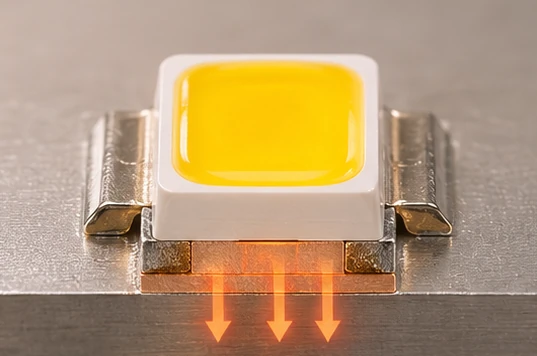
COB array
A chip-on-board engine concentrates multiple emitters into a small luminous surface that works well with a spotlight reflector where beam control matters.
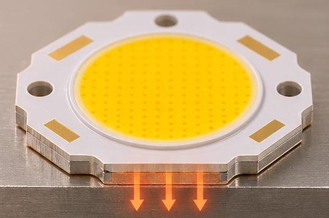
SMD strip
A flexible tape populated with surface-mounted LEDs follows joinery details, with chip pitch and diffuser depth determining whether individual points remain visible.
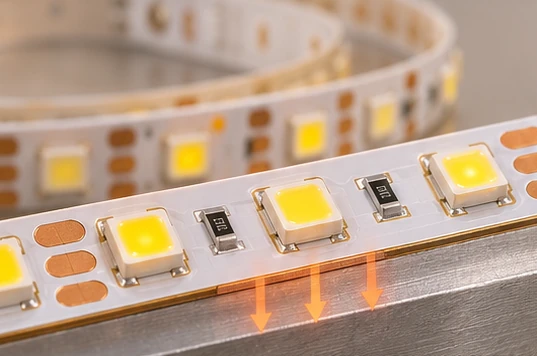
Rigid PCB
A printed circuit board carries the conductors and components, and its geometry determines whether a replacement module fits the original housing and optic.
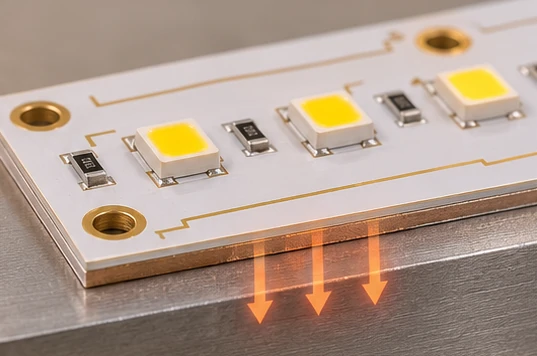
Metal-core PCB
An insulated metal substrate spreads heat beneath the LEDs and needs good contact with the heat sink to perform as intended.
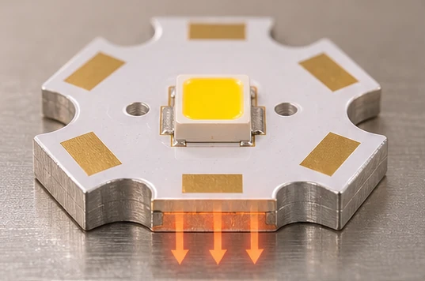
LED holder
A matched holder locates the light engine relative to the reflector and can simplify servicing without soldering at the ceiling.
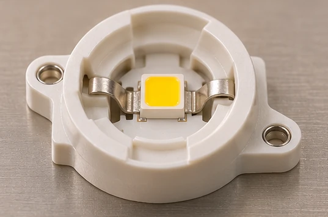
Heat sink
Aluminium fins transfer heat to the surrounding air, so an enclosed ceiling pocket can change performance even when the catalogue wattage stays the same.
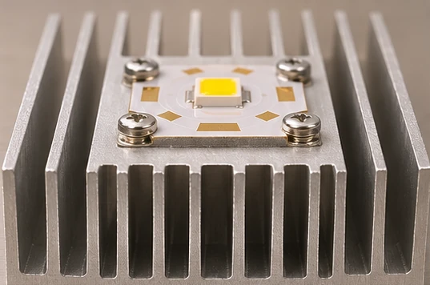
Thermal pad or paste
A thin specified interface fills microscopic gaps between board and sink, limiting the temperature rise across the joint.
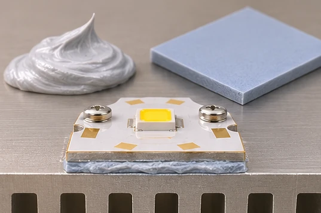
Thermal sensor
A temperature sensor allows compatible gear to reduce drive current when the monitored assembly becomes too hot.
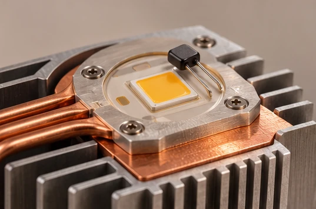
Optics and glare control
Reflector
A specular or faceted reflector redirects light into the chosen beam, letting the designer place more useful illuminance on an object for a given input power.
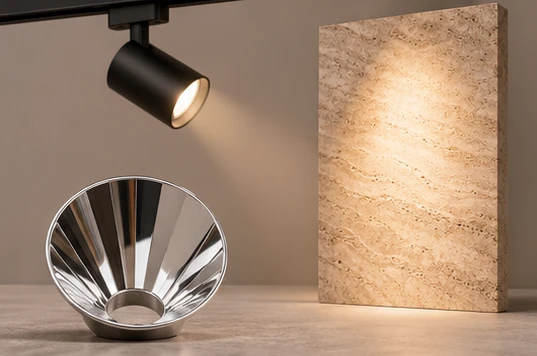
TIR lens
A total internal reflection optic controls rays close to the source and is useful where a compact track head must project a defined beam.
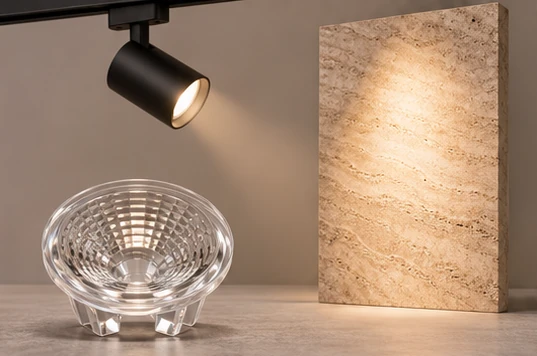
Asymmetric lens
An offset distribution sends light towards a wall or shelf from one side and can improve vertical lux without adding another row of fittings.
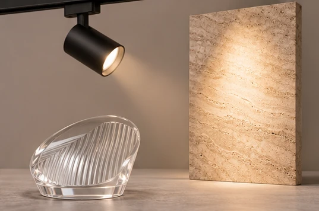
Diffuser
An opal cover blends bright LED points into a continuous line while absorbing some output, so calculate with the complete fitting’s photometry.
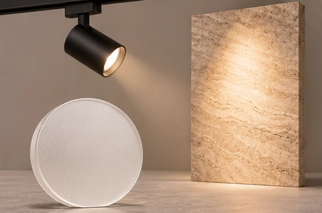
Microprismatic panel
A patterned optical sheet redirects high-angle light above desks, with glare performance assessed for the room and viewing direction.
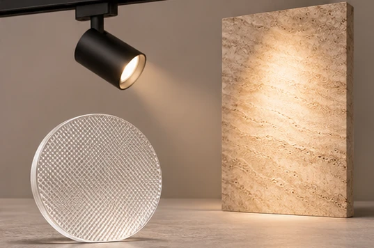
Light-guide plate
A clear patterned plate distributes light from edge-mounted LEDs across a panel, where uniformity depends on the optical stack.
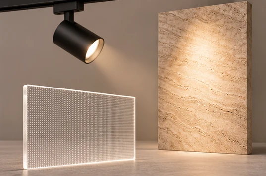
Baffle
A recessed dark baffle screens the bright source from oblique views, especially above low lounge seating.
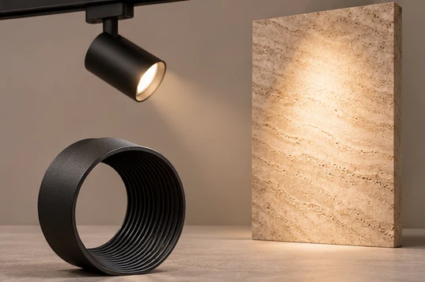
Honeycomb louvre
A cellular grid cuts off stray side light from a spotlight and should be included in the photometric selection because it reduces delivered flux.
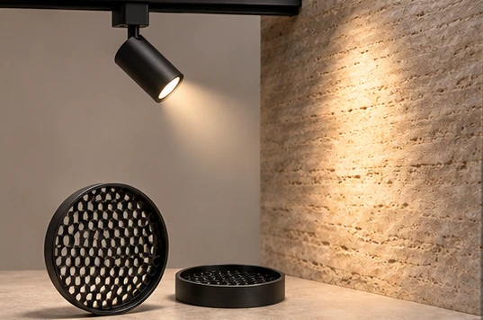
Snoot and barn doors
A snoot shields the aperture around its circumference while adjustable barn doors trim spill at selected edges of a display.
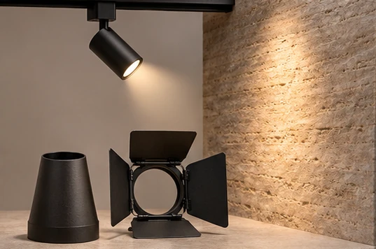
Spread lens and colour filter
An elliptical spread lens elongates the beam over artwork while a colour filter changes its spectrum and transmitted output.
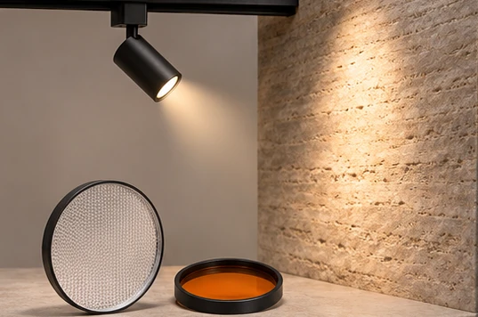
Protective glass and retaining ring
A front glass guards the optic and a retaining ring holds it in its intended position during normal service.
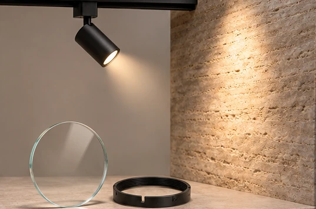
Housing, mounting and alignment
Body and bezel
The luminaire body supports the optical assembly while the visible bezel covers the cut edge, making ceiling thickness and finish part of the order code.
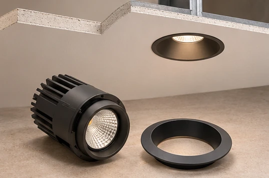
Plaster-in frame
A trimless frame sets the aperture before finishing and must remain aligned while plaster cures around the opening.
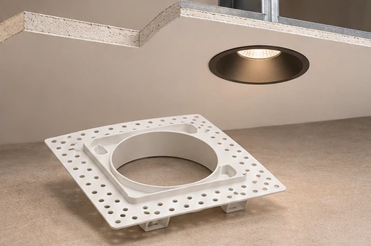
Spring clips and mounting brackets
Spring clips clamp suitable ceiling boards while brackets provide a separate attachment for heavier or differently mounted housings.
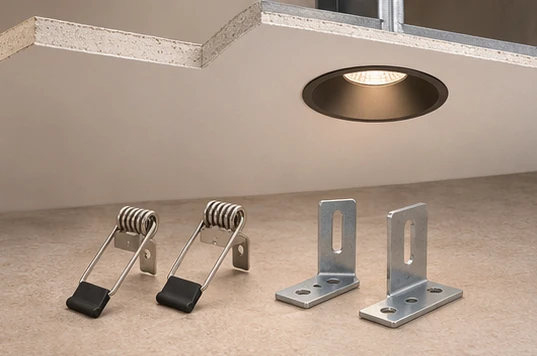
Recess can and rough-in plate
A can establishes the ceiling recess while a rough-in plate fixes the opening position before the finished ceiling is installed.
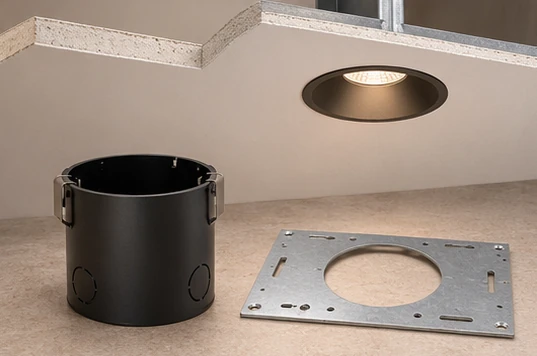
Adjustable gimbal
A tilting carrier lets the commissioning team aim a spotlight at art and lock it after the final furniture layout is known.
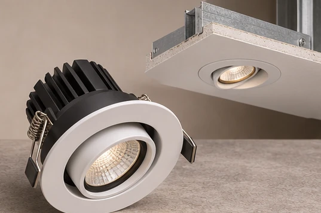
Surface box and canopy
A surface box houses shallow-ceiling connections while a pendant canopy conceals the ceiling termination and suspension point.
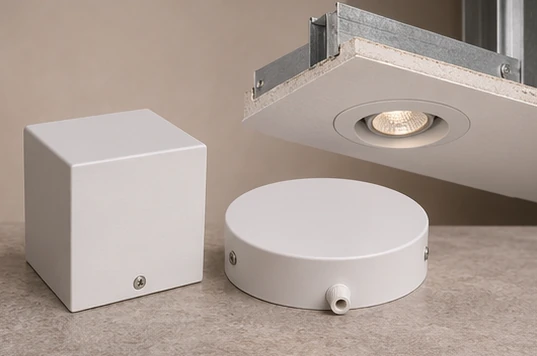
Suspension wire and gripper
A matched cable and gripper set lets installers level a continuous pendant within its documented load rating.
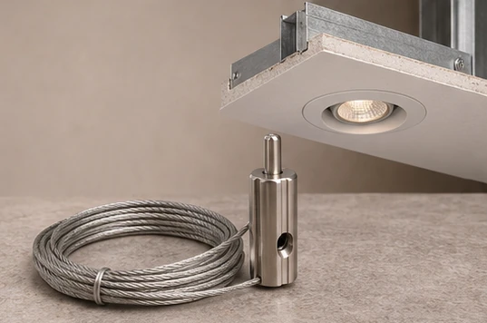
Safety tether
A specified secondary restraint retains a fitting or removable part if its primary fixing fails.
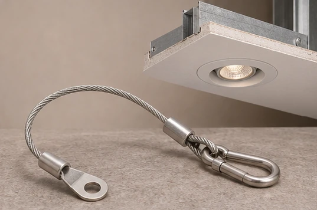
Track rail and adapter
A compatible track adapter supports and supplies a relocatable spotlight so retail displays can move without relocating ceiling outlets.
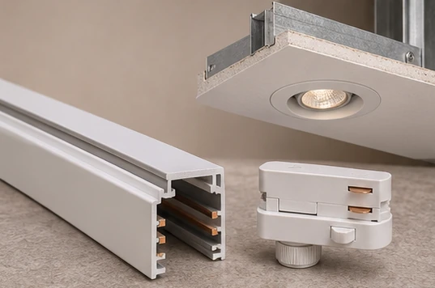
Track feed, joiner and end cap
The feed introduces power, compatible joiners maintain the selected circuit through bends, and the end cap closes the exposed rail end.
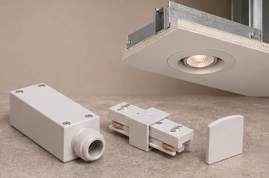
Linear profile and mounting channel
An extruded profile aligns LED tape and its lens while a recessed channel resolves the junction with cabinetry.
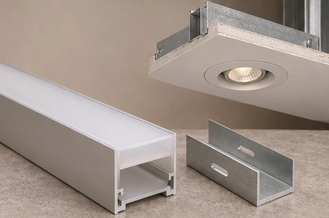
Gasket and cable gland
A gasket seals a housing joint while a correctly sized gland seals a cable entry where cleaning or moisture exposure requires a rated assembly.
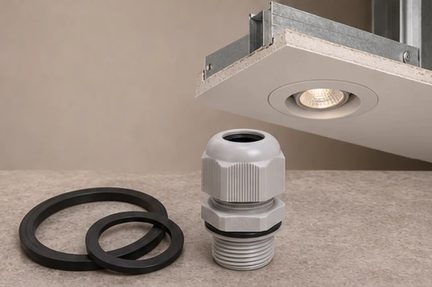
Power, wiring and control
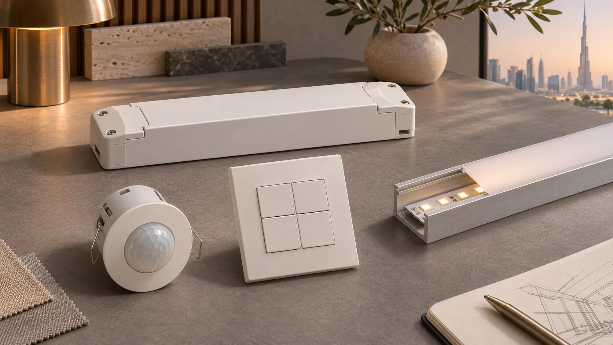
Constant-current driver
A regulated current source operates a compatible LED engine within its specified forward-voltage range, avoiding an output mismatch at procurement.
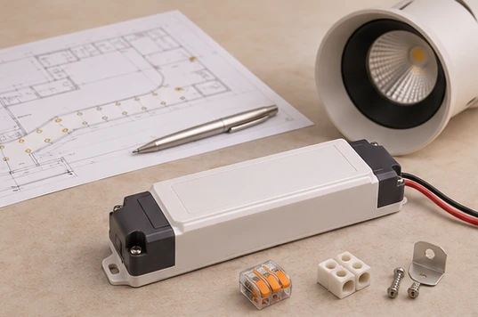
Constant-voltage supply
A regulated voltage supply serves compatible tape or modules, with cable length and voltage drop checked at the far end of each run.
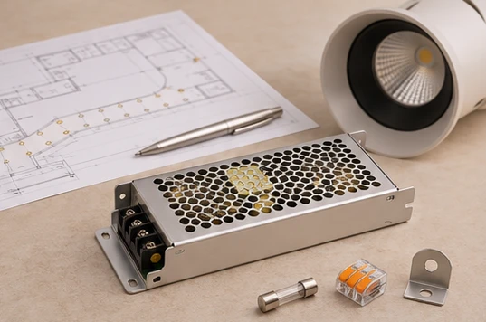
Terminal block and quick connector
A terminal block provides a defined termination while a keyed plug lets an approved replacement module disconnect for service.
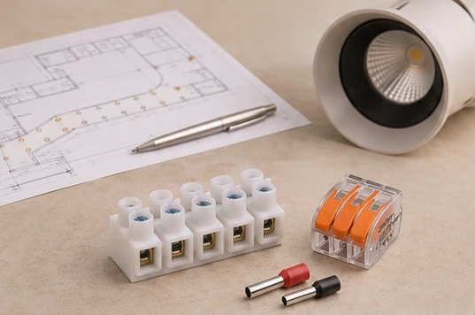
Strain relief and grommet
A cable clamp takes mechanical pull off terminals while a grommet protects insulation at a sheet-metal opening.
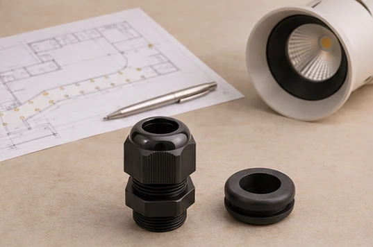
Lampholder
A GU10, E27 or other matched socket enables lamp replacement subject to the fitting’s electrical, dimensional and thermal limits.
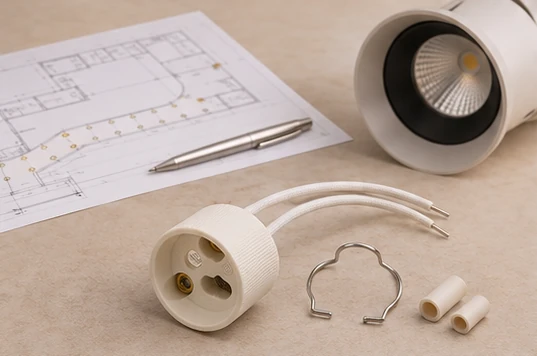
DALI driver and bus supply
An addressable driver responds to lighting commands while the bus supply powers communications, enabling regrouping after a tenant layout changes.
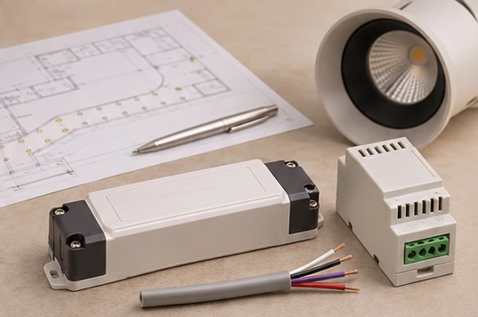
Phase-cut interface
A compatible interface dims approved mains lamps in decorative fittings, with minimum load and low-end stability tested on the actual lamp combination.
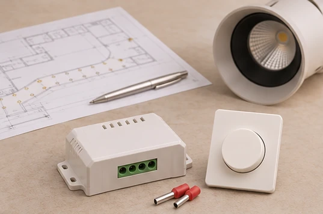
Analogue dimming interface
A 0–10 V or 1–10 V interface translates a control level into driver output, with polarity and switch-off behaviour checked against both datasheets.
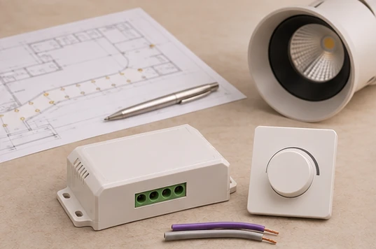
PWM controller and repeater
A compatible pulse-width controller sets LED tape output while a repeater can extend a control zone using a suitably sized local supply.
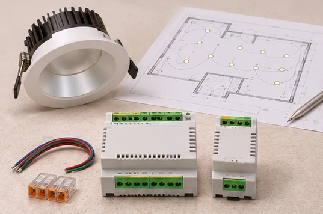
Occupancy and daylight sensors
A presence sensor reduces unnecessary operating hours while a daylight sensor adjusts the perimeter lighting as sunlight changes.
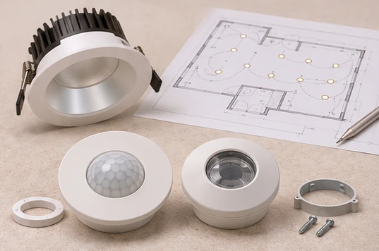
Keypad, controller and gateway
The keypad captures the occupant’s choice, the controller runs the scenes and the gateway exchanges agreed points with the building management system.
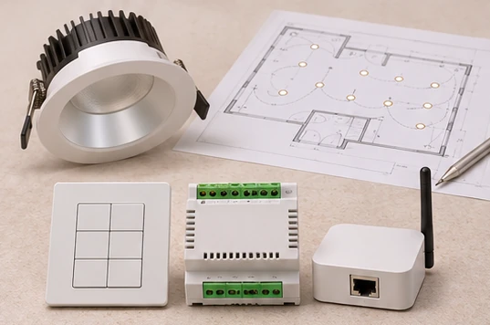
Emergency conversion module and battery
A compatible emergency module and battery supply designated LEDs during a mains failure, with emergency output and duration verified for the installed assembly.
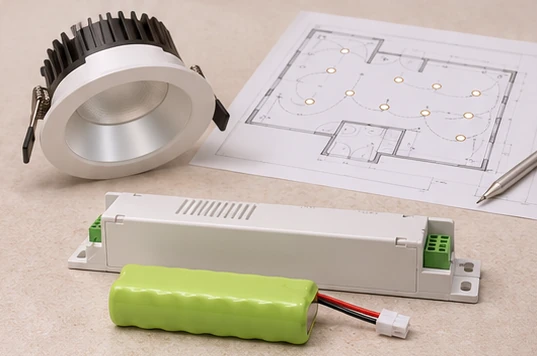
Test switch and status indicator
A test facility initiates the prescribed emergency check while an accessible indicator lets maintenance staff identify faults.
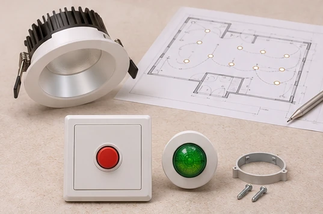
Fuse and surge protection device
Specified protection components limit the consequences of electrical faults or transient voltage events and require coordination with the circuit design.
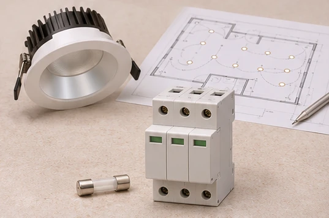
Ordering a maintainable assembly
Specification and spares
For an Abu Dhabi villa or Dubai office, schedule the complete luminaire code, optic, gear, mounting kit and replaceable parts together so later substitutions preserve the approved beam and control behaviour.
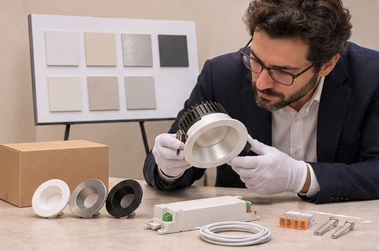
Power and acceptance
Compare complete-system input watts and delivered photometry with the approved LPD schedule and maintained lux calculation before accepting an accessory substitution.
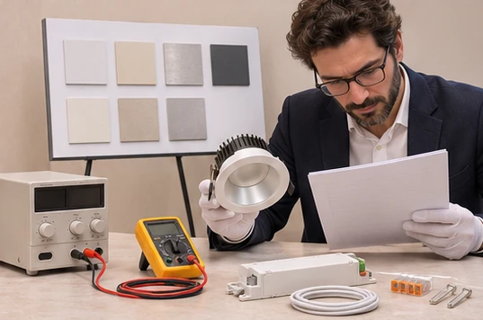